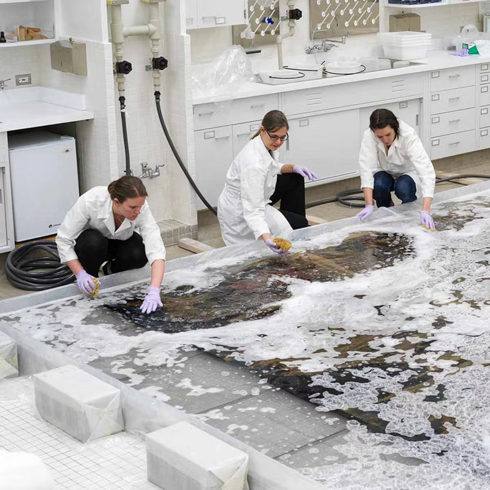

Merit Gala: Showcasing Student Success
Honorees Caroline and Charlie Huebner, arts and childhood development advocates, received the Alice S. Pfaelzer Award for Distinguished Service to the Arts at the recent Merit…

Stage Write: TimeLine Reborn
“It was nice to be in a purpose-built theater instead of a make-shift church space.” — Preview audience member at TimeLine’s new Broadway theater

Stitching a Community Together: The Story Behind Kenilworth’s Centennial Needlepoint
In 1996, as Kenilworth celebrated its centennial, a group of residents set out to commemorate the milestone in a way that was both artistic and deeply personal. Under the…

Jonathan Hoenig: Chicago, Capitalism, and the Art of Investing
Jonathan Hoenig is an American author, investor and commentator in Chicago. Founder of Capitalist Pig Asset Management, trader at the Chicago Board of Trade and Fox Business/Fox…

Stories of Textiles at The Met
The Metropolitan Museum of Art (The Met) on Fifth Avenue in New York City is vast and each visit turns compelling and memorable. One of the ongoing installations, entitled Wedding…
Martha Graham When She Danced a Cold-War Peace Plan
"I am an auditory person. I'm lousy at visualizing. When I hear music my impulse is to move. When I'm in the throes of writing poetry, my hand hears the words." — Jean Colonomos,…

Graduation Dos and Don'ts
Lessons learned for parents and grandparents — halfway through a four-graduation season